驱动基础
驱动
驱动环境
因为老早前就整过驱动了，环境重新搭了下。
这边是win10专业版，虚拟机也是win10专业版
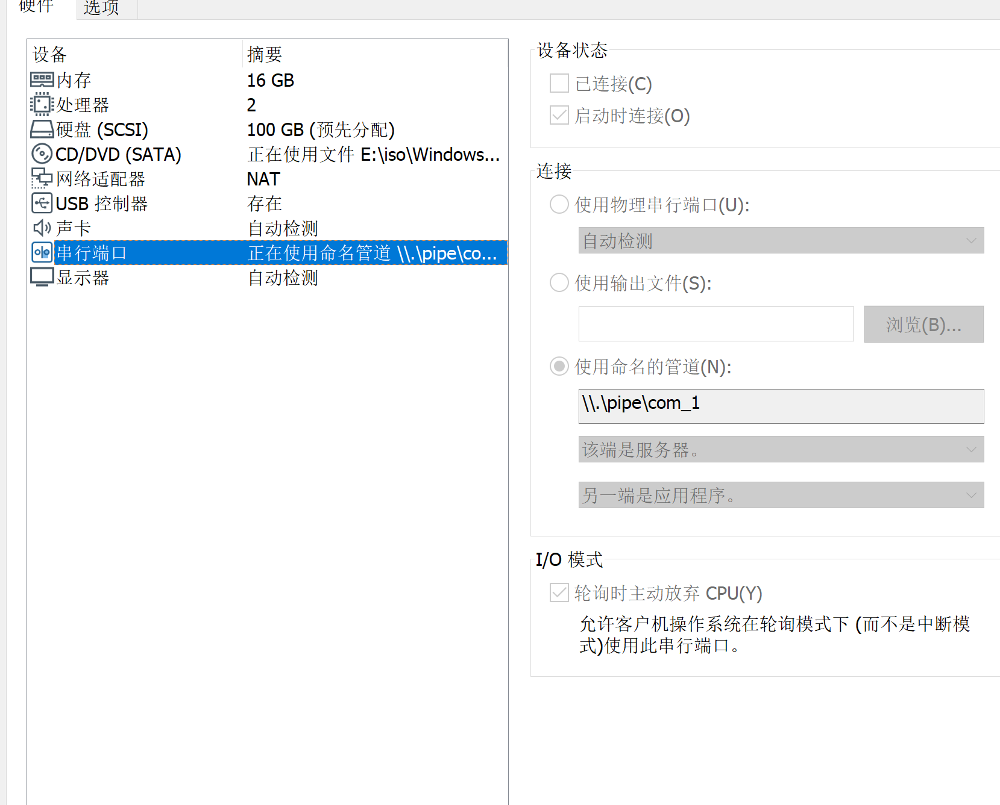
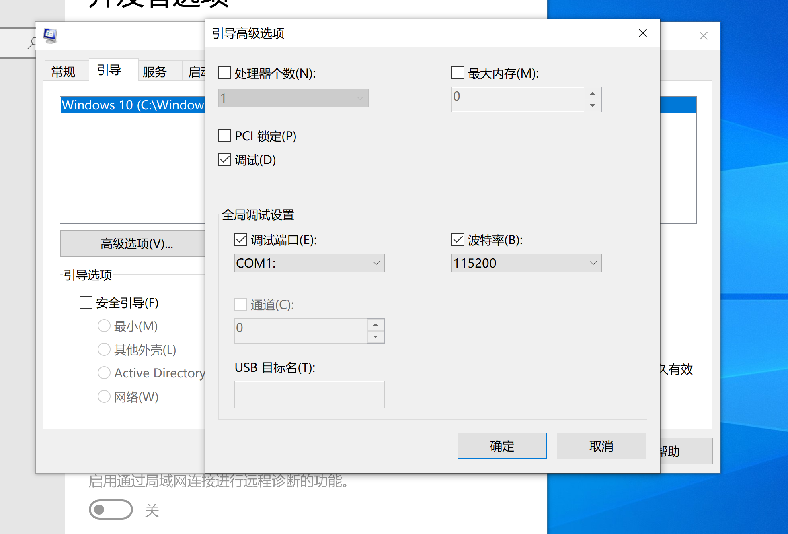
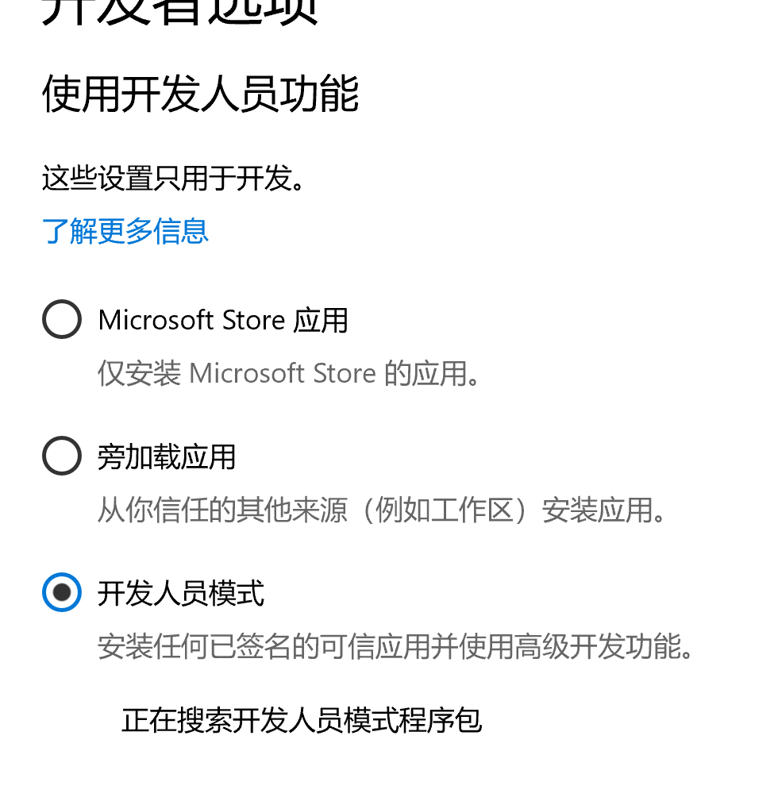
首先配置调试环境，这边按图设置一波就行
然后是软件配置这边安利俩个工具DriverMonitor和Dbgview，记得用管理员权限打开
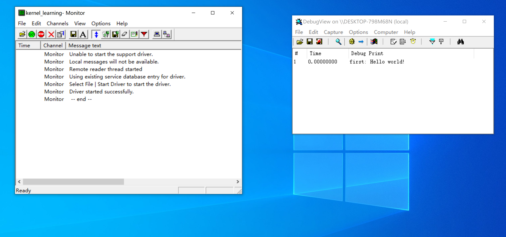
驱动代码如下
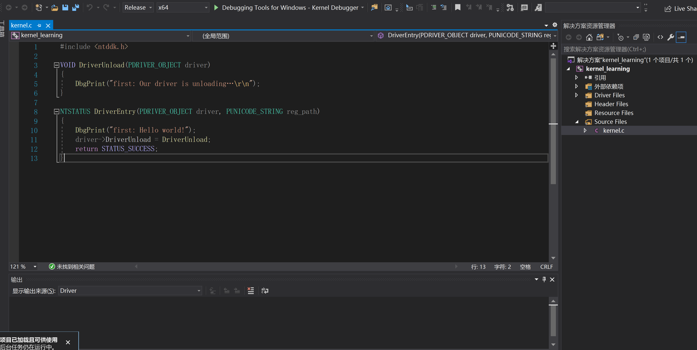
就成功了，如果报错签名问题的话重启电脑在启动设置那边禁用驱动签名
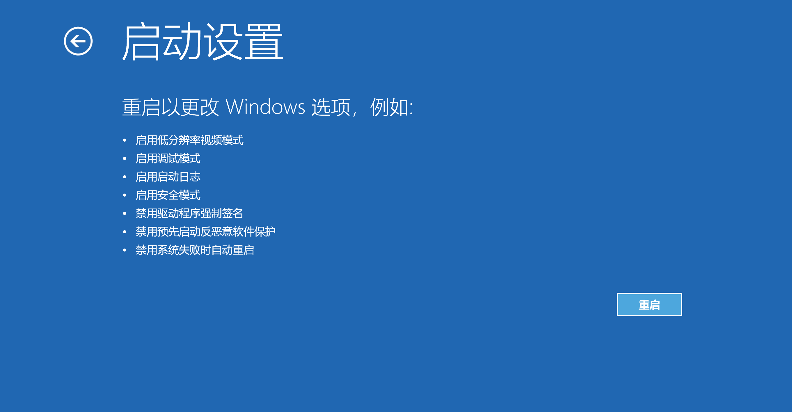
但是这是一次性的重启一次就不行了
需要永久禁用驱动签名的话输入bcdedit -set {default} TESTSIGNING on来启动测试模式
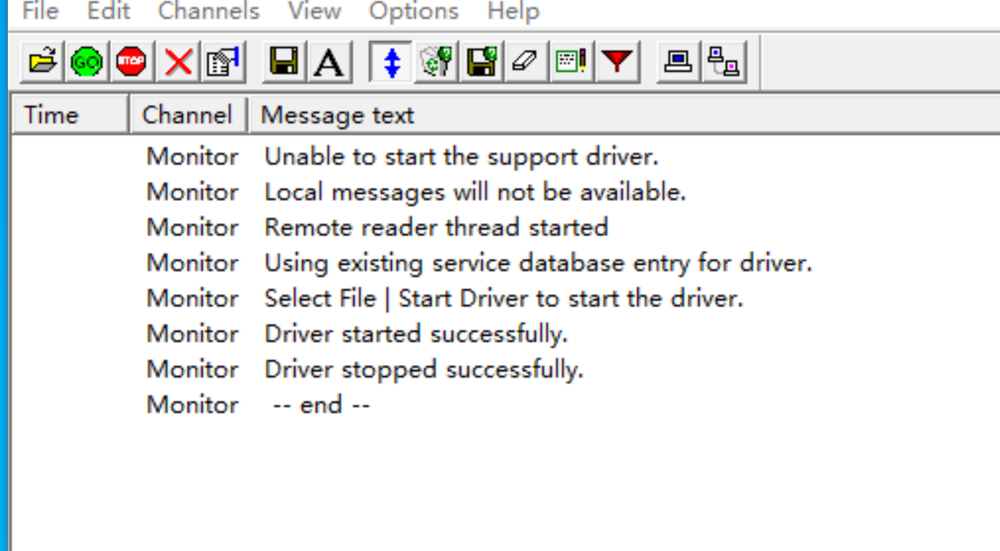
再说说调试
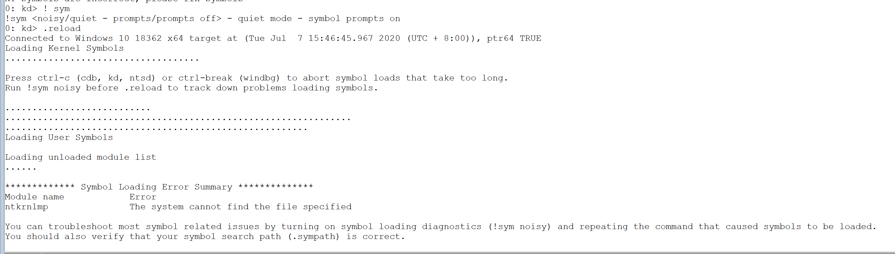
遇到符号路径问题输入
! sym
.reload
即可
驱动模块知识
1
2
3
4
5
6
7
8
9
10
11
12
| #include <ntddk.h>
VOID Unload(IN PDRIVER_OBJECT pDriverObject)
{
return STATUS_SUCCESS;
}
NTSTATUS DriverEntry(IN PDRIVER_OBJECT pDriverObject, IN PUNICODE_STRING RegistryPath) {
DbgPrint("%p,%wZ", pDriverObject, RegistryPath);
pDriverObject->DriverUnload = Unload;
return STATUS_SUCCESS;
}
|
编译加载，dbgview查看
FFFF870B6A6A8E30,\REGISTRY\MACHINE\SYSTEM\ControlSet001\Services\Kernel_learning
windbg查看对应结构体_driver_object
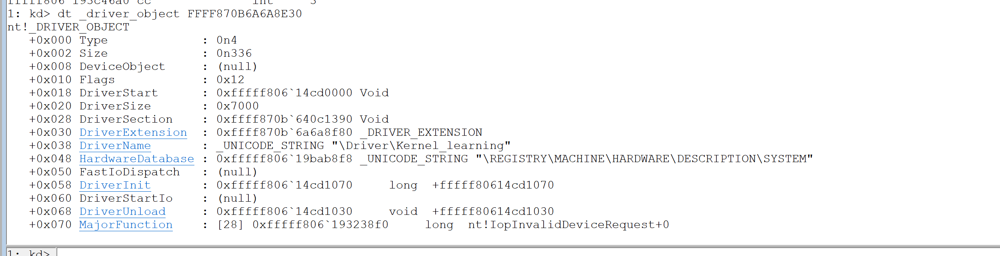
可以看到我们加载驱动的许多信息
再看看ldr，这个和三环peb的很像，在三环隐藏进程需要断链断三个，0环order和init不使用，所以只有第一个加载顺序，把所有内核模块都存在一个链表里,我们可以通过这个遍历所有内核模块
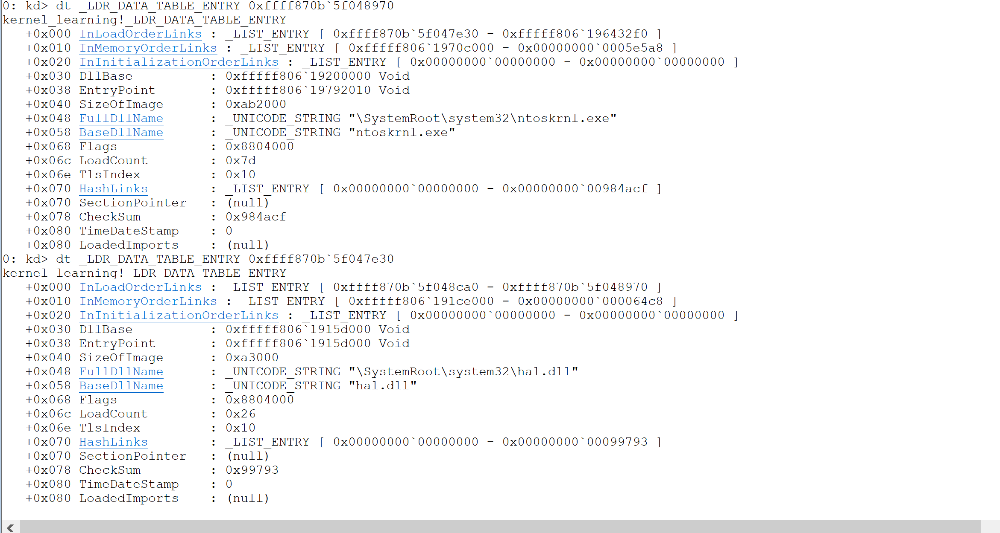
可以看到内核文件还有硬件抽象层dll
接下去尝试一波写代码遍历所有内核模块，成果如下
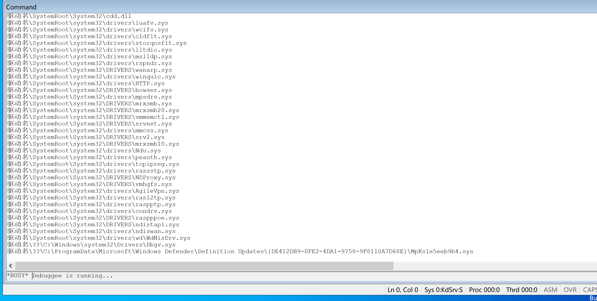
代码如下(把驱动名改成模块名更准确些，但就不钻牛角尖了)
1
2
3
4
5
6
7
8
9
10
11
12
13
14
15
16
17
18
19
20
21
22
23
24
25
26
27
28
29
30
31
32
33
34
35
36
37
38
39
40
41
42
43
44
45
46
47
48
49
50
51
52
53
54
55
56
57
58
59
| #include <ntddk.h>
typedef struct _LDR_DATA_TABLE_ENTRY {
LIST_ENTRY InLoadOrderLinks;
LIST_ENTRY InMemoryOrderLinks;
LIST_ENTRY InInitializationOrderLinks;
PVOID DllBase;
PVOID EntryPoint;
ULONG SizeOfImage;
UNICODE_STRING FullDllName;
UNICODE_STRING BaseDllName;
ULONG Flags;
USHORT LoadCount;
USHORT TlsIndex;
union {
LIST_ENTRY HashLinks;
struct {
PVOID SectionPointer;
ULONG CheckSum;
};
};
union {
struct {
ULONG TimeDateStamp;
};
struct {
PVOID LoadedImports;
};
};
} LDR_DATA_TABLE_ENTRY, * PLDR_DATA_TABLE_ENTRY;
VOID Unload(IN PDRIVER_OBJECT pDriverObject)
{
return STATUS_SUCCESS;
}
NTSTATUS DriverEntry(IN PDRIVER_OBJECT pDriverObject, IN PUNICODE_STRING RegistryPath) {
LDR_DATA_TABLE_ENTRY* fuck1, * fuck2;
fuck1 = (LDR_DATA_TABLE_ENTRY*)pDriverObject->DriverSection;
PLIST_ENTRY fuck3;
fuck3 = fuck1->InLoadOrderLinks.Flink;
while (TRUE)
{
fuck2 = (LDR_DATA_TABLE_ENTRY*)fuck3;
DbgPrint("驱动名%wZ\n", &fuck2->FullDllName);
fuck3 = fuck3->Flink;
if (fuck3 == &fuck1->InLoadOrderLinks)
{
fuck2 = (LDR_DATA_TABLE_ENTRY*)fuck3;
DbgPrint("驱动名%wZ\n", &fuck2->FullDllName);
break;
}
}
pDriverObject->DriverUnload = Unload;
return STATUS_SUCCESS;
}
|
当然与三环相对应也能进行模块隐藏，三环只需要断链三个链表，0环除了做这个还有一个二叉平衡树需要操作
再来一波常规的驱动编程，其实驱动编程很win32控件很像，在win32控件中消息循环对不同消息做不同处理，而在内核中则是一个新的封装的结构体叫做IRP，在消息循环中消息对应窗口对象而在内核中则是设备对象。如果熟悉win32消息处理机制的话学起来其实特别轻松
基本编程思路是
1.创建设备对象
2.规定通信方式
3.注册符号链接
4.注册irp处理函数
5.编写irp处理函数